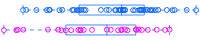

| TRINITY_DN43080_c1_g1_TRINITY_DN43080_c1_g1_i3_g.14110_m.14110 | | 2.500 | 6.73e-11 | 3.28e-07 |
| TRINITY_DN42378_c1_g1_TRINITY_DN42378_c1_g1_i2_g.12752_m.12752 | | 3.260 | 2.91e-10 | 7.10e-07 |
| TRINITY_DN45416_c4_g2_TRINITY_DN45416_c4_g2_i3_g.19333_m.19333 | | 2.050 | 1.71e-09 | 2.77e-06 |
| TRINITY_DN43359_c0_g1_TRINITY_DN43359_c0_g1_i1_g.14658_m.14658 | | 1.170 | 6.26e-09 | 7.07e-06 |
| TRINITY_DN46589_c0_g1_TRINITY_DN46589_c0_g1_i1_g.22741_m.22741 |  | 1.810 | 7.72e-09 | 7.07e-06 |
| TRINITY_DN46136_c0_g1_TRINITY_DN46136_c0_g1_i2_g.21366_m.21366 | | 2.530 | 8.70e-09 | 7.07e-06 |
| TRINITY_DN46709_c0_g1_TRINITY_DN46709_c0_g1_i2_g.23139_m.23139 | | 2.940 | 1.08e-08 | 7.51e-06 |
| TRINITY_DN46759_c2_g1_TRINITY_DN46759_c2_g1_i4_g.23266_m.23266 | | -1.990 | 9.03e-08 | 5.50e-05 |
| TRINITY_DN45064_c6_g1_TRINITY_DN45064_c6_g1_i1_g.18465_m.18465 | | 2.200 | 1.55e-07 | 8.20e-05 |
| TRINITY_DN45983_c5_g1_TRINITY_DN45983_c5_g1_i3_g.20837_m.20837 | | 1.530 | 1.68e-07 | 8.20e-05 |
| TRINITY_DN45253_c3_g1_TRINITY_DN45253_c3_g1_i2_g.18927_m.18927 | | 1.560 | 2.30e-07 | 1.02e-04 |
| TRINITY_DN45370_c1_g1_TRINITY_DN45370_c1_g1_i1_g.19244_m.19244 |  | 1.500 | 2.88e-07 | 1.17e-04 |
| TRINITY_DN43019_c2_g2_TRINITY_DN43019_c2_g2_i1_g.13979_m.13979 | | 2.200 | 5.43e-07 | 2.03e-04 |
| TRINITY_DN46844_c0_g1_TRINITY_DN46844_c0_g1_i3_g.23563_m.23563 | | 2.050 | 7.46e-07 | 2.60e-04 |
| TRINITY_DN45883_c14_g4_TRINITY_DN45883_c14_g4_i1_g.20622_m.20622 | | -1.490 | 1.13e-06 | 3.69e-04 |
| TRINITY_DN47077_c1_g1_TRINITY_DN47077_c1_g1_i2_g.24500_m.24500 | | 1.770 | 1.40e-06 | 4.26e-04 |
| TRINITY_DN45492_c0_g1_TRINITY_DN45492_c0_g1_i5_g.19587_m.19587 | | 1.780 | 1.81e-06 | 5.06e-04 |
| TRINITY_DN44708_c0_g1_TRINITY_DN44708_c0_g1_i1_g.17578_m.17578 |  | 0.955 | 1.87e-06 | 5.06e-04 |
| TRINITY_DN44127_c0_g1_TRINITY_DN44127_c0_g1_i1_g.16286_m.16286 | | 2.130 | 2.28e-06 | 5.86e-04 |
| TRINITY_DN35583_c0_g1_TRINITY_DN35583_c0_g1_i1_g.5795_m.5795 | | 1.780 | 2.49e-06 | 6.07e-04 |
| TRINITY_DN46075_c1_g2_TRINITY_DN46075_c1_g2_i4_g.21099_m.21099 | | 0.706 | 2.72e-06 | 6.32e-04 |
| TRINITY_DN46948_c0_g3_TRINITY_DN46948_c0_g3_i3_g.24072_m.24072 | | 1.010 | 2.96e-06 | 6.55e-04 |
| TRINITY_DN44027_c0_g2_TRINITY_DN44027_c0_g2_i1_g.16076_m.16076 | | 1.210 | 3.64e-06 | 7.71e-04 |
| TRINITY_DN47315_c4_g1_TRINITY_DN47315_c4_g1_i2_g.25566_m.25566 | | 1.130 | 3.95e-06 | 8.02e-04 |
| TRINITY_DN45029_c0_g1_TRINITY_DN45029_c0_g1_i1_g.18352_m.18352 | | 1.070 | 4.33e-06 | 8.45e-04 |
| TRINITY_DN46368_c3_g1_TRINITY_DN46368_c3_g1_i1_g.22098_m.22098 | | 1.980 | 4.63e-06 | 8.54e-04 |
| TRINITY_DN47215_c1_g4_TRINITY_DN47215_c1_g4_i3_g.25054_m.25054 | | 1.460 | 4.89e-06 | 8.54e-04 |
| TRINITY_DN42736_c2_g3_TRINITY_DN42736_c2_g3_i3_g.13485_m.13485 | | -1.800 | 4.99e-06 | 8.54e-04 |
| TRINITY_DN46382_c0_g1_TRINITY_DN46382_c0_g1_i1_g.22149_m.22149 | | 0.723 | 5.08e-06 | 8.54e-04 |
| TRINITY_DN43023_c0_g1_TRINITY_DN43023_c0_g1_i1_g.14016_m.14016 | | 1.870 | 5.31e-06 | 8.64e-04 |
| TRINITY_DN44316_c2_g9_TRINITY_DN44316_c2_g9_i1_g.16676_m.16676 | | 2.200 | 5.68e-06 | 8.93e-04 |
| TRINITY_DN43845_c5_g1_TRINITY_DN43845_c5_g1_i1_g.15617_m.15617 | | 1.360 | 5.88e-06 | 8.95e-04 |
| TRINITY_DN46303_c3_g2_TRINITY_DN46303_c3_g2_i2_g.21867_m.21867 | | 1.480 | 6.19e-06 | 9.08e-04 |
| TRINITY_DN44965_c0_g1_TRINITY_DN44965_c0_g1_i1_g.18180_m.18180 |  | 1.150 | 6.49e-06 | 9.08e-04 |
| TRINITY_DN42945_c0_g1_TRINITY_DN42945_c0_g1_i2_g.13872_m.13872 | | 1.400 | 6.52e-06 | 9.08e-04 |
| TRINITY_DN47215_c0_g1_TRINITY_DN47215_c0_g1_i6_g.25052_m.25052 | | 1.320 | 6.96e-06 | 9.43e-04 |
| TRINITY_DN47109_c0_g2_TRINITY_DN47109_c0_g2_i1_g.24606_m.24606 | | 1.730 | 7.24e-06 | 9.53e-04 |
| TRINITY_DN45608_c1_g1_TRINITY_DN45608_c1_g1_i2_g.19834_m.19834 | | 1.440 | 7.43e-06 | 9.53e-04 |
| TRINITY_DN46924_c3_g1_TRINITY_DN46924_c3_g1_i1_g.23942_m.23942 | | 1.190 | 9.39e-06 | 1.17e-03 |
| TRINITY_DN43028_c0_g3_TRINITY_DN43028_c0_g3_i1_g.14031_m.14031 |  | 0.514 | 1.05e-05 | 1.28e-03 |
| TRINITY_DN44303_c0_g1_TRINITY_DN44303_c0_g1_i3_g.16625_m.16625 | | 1.170 | 1.14e-05 | 1.36e-03 |
| TRINITY_DN47267_c1_g3_TRINITY_DN47267_c1_g3_i2_g.25273_m.25273 | | 1.160 | 1.22e-05 | 1.41e-03 |
| TRINITY_DN45607_c0_g2_TRINITY_DN45607_c0_g2_i2_g.19841_m.19841 | | 1.390 | 1.25e-05 | 1.41e-03 |
| TRINITY_DN46657_c1_g3_TRINITY_DN46657_c1_g3_i2_g.22962_m.22962 | | -2.320 | 1.30e-05 | 1.44e-03 |
| TRINITY_DN47262_c0_g1_TRINITY_DN47262_c0_g1_i1_g.25208_m.25208 | | 1.310 | 1.36e-05 | 1.45e-03 |
| TRINITY_DN46113_c0_g1_TRINITY_DN46113_c0_g1_i1_g.21283_m.21283 | | 1.310 | 1.37e-05 | 1.45e-03 |
| TRINITY_DN43744_c2_g1_TRINITY_DN43744_c2_g1_i1_g.15410_m.15410 | | 1.940 | 1.56e-05 | 1.62e-03 |
| TRINITY_DN41425_c0_g1_TRINITY_DN41425_c0_g1_i2_g.11177_m.11177 | | 0.905 | 1.78e-05 | 1.81e-03 |
| TRINITY_DN45513_c2_g1_TRINITY_DN45513_c2_g1_i1_g.19646_m.19646 | | 1.460 | 2.16e-05 | 2.15e-03 |
| TRINITY_DN45513_c2_g2_TRINITY_DN45513_c2_g2_i1_g.19647_m.19647 | | 1.800 | 2.35e-05 | 2.23e-03 |
| TRINITY_DN46944_c4_g2_TRINITY_DN46944_c4_g2_i3_g.24029_m.24029 | | 1.400 | 2.36e-05 | 2.23e-03 |
| TRINITY_DN47298_c2_g2_TRINITY_DN47298_c2_g2_i5_g.25412_m.25412 | | 1.150 | 2.41e-05 | 2.23e-03 |
| TRINITY_DN46932_c1_g2_TRINITY_DN46932_c1_g2_i1_g.23986_m.23986 | | -1.000 | 2.42e-05 | 2.23e-03 |
| TRINITY_DN42340_c3_g1_TRINITY_DN42340_c3_g1_i1_g.12690_m.12690 |  | 1.830 | 2.66e-05 | 2.40e-03 |
| TRINITY_DN47267_c1_g1_TRINITY_DN47267_c1_g1_i3_g.25275_m.25275 | | 0.985 | 2.72e-05 | 2.41e-03 |
| TRINITY_DN36328_c0_g1_TRINITY_DN36328_c0_g1_i2_g.6208_m.6208 | | 1.810 | 2.98e-05 | 2.60e-03 |
| TRINITY_DN44711_c0_g1_TRINITY_DN44711_c0_g1_i1_g.17581_m.17581 | | 1.610 | 3.10e-05 | 2.65e-03 |
| TRINITY_DN43507_c1_g1_TRINITY_DN43507_c1_g1_i3_g.14904_m.14904 | | 1.390 | 3.16e-05 | 2.66e-03 |
| TRINITY_DN42579_c2_g2_TRINITY_DN42579_c2_g2_i5_g.13175_m.13175 | | 1.310 | 3.33e-05 | 2.76e-03 |
| TRINITY_DN46969_c0_g1_TRINITY_DN46969_c0_g1_i1_g.24165_m.24165 | | 2.010 | 3.81e-05 | 3.10e-03 |
| TRINITY_DN43612_c4_g1_TRINITY_DN43612_c4_g1_i1_g.15169_m.15169 | | 1.660 | 4.09e-05 | 3.27e-03 |
| TRINITY_DN44980_c0_g1_TRINITY_DN44980_c0_g1_i1_g.18203_m.18203 | | 2.250 | 4.43e-05 | 3.44e-03 |
| TRINITY_DN46402_c0_g1_TRINITY_DN46402_c0_g1_i1_g.22193_m.22193 | | 1.320 | 4.45e-05 | 3.44e-03 |
| TRINITY_DN42197_c1_g2_TRINITY_DN42197_c1_g2_i1_g.12419_m.12419 | | 0.842 | 4.94e-05 | 3.77e-03 |
| TRINITY_DN43572_c0_g4_TRINITY_DN43572_c0_g4_i1_g.15051_m.15051 | | 1.660 | 5.35e-05 | 4.01e-03 |
| TRINITY_DN44140_c0_g1_TRINITY_DN44140_c0_g1_i1_g.16300_m.16300 | | 1.660 | 6.07e-05 | 4.45e-03 |
| TRINITY_DN32886_c0_g1_TRINITY_DN32886_c0_g1_i1_g.4542_m.4542 | | -1.340 | 6.12e-05 | 4.45e-03 |
| TRINITY_DN42467_c0_g1_TRINITY_DN42467_c0_g1_i3_g.12926_m.12926 | | 2.070 | 6.24e-05 | 4.48e-03 |
| TRINITY_DN47286_c5_g1_TRINITY_DN47286_c5_g1_i4_g.25342_m.25342 | | 1.590 | 6.53e-05 | 4.60e-03 |
| TRINITY_DN45999_c0_g3_TRINITY_DN45999_c0_g3_i3_g.20923_m.20923 | | 1.440 | 6.61e-05 | 4.60e-03 |
| TRINITY_DN41458_c4_g2_TRINITY_DN41458_c4_g2_i1_g.11236_m.11236 | | 2.300 | 6.77e-05 | 4.65e-03 |
| TRINITY_DN46565_c1_g1_TRINITY_DN46565_c1_g1_i2_g.22669_m.22669 | | 1.280 | 7.19e-05 | 4.87e-03 |
| TRINITY_DN46674_c5_g1_TRINITY_DN46674_c5_g1_i1_g.23027_m.23027 | | 1.700 | 7.71e-05 | 5.15e-03 |
| TRINITY_DN46938_c1_g1_TRINITY_DN46938_c1_g1_i1_g.24007_m.24007 | | 1.110 | 8.04e-05 | 5.30e-03 |
| TRINITY_DN39760_c0_g2_TRINITY_DN39760_c0_g2_i1_g.9001_m.9001 | | -1.490 | 8.31e-05 | 5.40e-03 |
| TRINITY_DN40586_c3_g4_TRINITY_DN40586_c3_g4_i1_g.10026_m.10026 | | 1.890 | 8.64e-05 | 5.51e-03 |
| TRINITY_DN44932_c1_g1_TRINITY_DN44932_c1_g1_i3_g.18105_m.18105 | | 1.200 | 8.71e-05 | 5.51e-03 |
| TRINITY_DN43906_c3_g1_TRINITY_DN43906_c3_g1_i1_g.15790_m.15790 | | -2.050 | 9.56e-05 | 5.97e-03 |
| TRINITY_DN46243_c1_g1_TRINITY_DN46243_c1_g1_i2_g.21716_m.21716 | | 1.440 | 1.02e-04 | 6.32e-03 |
| TRINITY_DN46885_c1_g2_TRINITY_DN46885_c1_g2_i2_g.23825_m.23825 | | 1.140 | 1.12e-04 | 6.84e-03 |
| TRINITY_DN47322_c14_g1_TRINITY_DN47322_c14_g1_i5_g.25626_m.25626 | | 1.540 | 1.15e-04 | 6.92e-03 |
| TRINITY_DN44876_c2_g3_TRINITY_DN44876_c2_g3_i1_g.17997_m.17997 | | 2.090 | 1.18e-04 | 7.00e-03 |
| TRINITY_DN47298_c1_g1_TRINITY_DN47298_c1_g1_i3_g.25398_m.25398 | | 1.200 | 1.20e-04 | 7.05e-03 |
| TRINITY_DN45050_c0_g1_TRINITY_DN45050_c0_g1_i1_g.18403_m.18403 | | 1.080 | 1.23e-04 | 7.13e-03 |
| TRINITY_DN46711_c1_g1_TRINITY_DN46711_c1_g1_i3_g.23143_m.23143 | | 1.470 | 1.30e-04 | 7.48e-03 |
| TRINITY_DN45885_c1_g2_TRINITY_DN45885_c1_g2_i1_g.20587_m.20587 | | 1.260 | 1.34e-04 | 7.61e-03 |
| TRINITY_DN38163_c0_g1_TRINITY_DN38163_c0_g1_i1_g.7519_m.7519 | | 1.810 | 1.38e-04 | 7.74e-03 |
| TRINITY_DN46071_c1_g2_TRINITY_DN46071_c1_g2_i1_g.21084_m.21084 | | 0.916 | 1.40e-04 | 7.74e-03 |
| TRINITY_DN44017_c0_g1_TRINITY_DN44017_c0_g1_i1_g.16045_m.16045 | | 0.744 | 1.42e-04 | 7.78e-03 |
| TRINITY_DN45635_c0_g1_TRINITY_DN45635_c0_g1_i2_g.19888_m.19888 | | 1.770 | 1.44e-04 | 7.78e-03 |
| TRINITY_DN46585_c1_g1_TRINITY_DN46585_c1_g1_i3_g.22720_m.22720 | | 1.010 | 1.46e-04 | 7.81e-03 |
| TRINITY_DN46945_c3_g1_TRINITY_DN46945_c3_g1_i2_g.24038_m.24038 | | -1.560 | 1.47e-04 | 7.82e-03 |
| TRINITY_DN45539_c0_g1_TRINITY_DN45539_c0_g1_i2_g.19688_m.19688 | | 0.906 | 1.51e-04 | 7.90e-03 |
| TRINITY_DN42736_c2_g1_TRINITY_DN42736_c2_g1_i2_g.13483_m.13483 | | -2.040 | 1.54e-04 | 7.97e-03 |
| TRINITY_DN43572_c0_g2_TRINITY_DN43572_c0_g2_i5_g.15044_m.15044 | | 0.966 | 1.56e-04 | 8.02e-03 |
| TRINITY_DN47166_c0_g1_TRINITY_DN47166_c0_g1_i3_g.24837_m.24837 | | 1.990 | 1.61e-04 | 8.17e-03 |
| TRINITY_DN44899_c3_g2_TRINITY_DN44899_c3_g2_i1_g.18029_m.18029 | | 1.190 | 1.87e-04 | 9.41e-03 |
| TRINITY_DN46710_c0_g2_TRINITY_DN46710_c0_g2_i3_g.23142_m.23142 | | 1.080 | 2.05e-04 | 1.02e-02 |
| TRINITY_DN44169_c5_g2_TRINITY_DN44169_c5_g2_i1_g.16394_m.16394 | | 0.667 | 2.08e-04 | 1.02e-02 |
| TRINITY_DN36516_c0_g1_TRINITY_DN36516_c0_g1_i2_g.6317_m.6317 | | -1.720 | 2.08e-04 | 1.02e-02 |
| TRINITY_DN46509_c0_g1_TRINITY_DN46509_c0_g1_i1_g.22498_m.22498 | | 0.869 | 2.11e-04 | 1.02e-02 |
| TRINITY_DN45860_c2_g3_TRINITY_DN45860_c2_g3_i3_g.20473_m.20473 | | 1.200 | 2.48e-04 | 1.19e-02 |
| TRINITY_DN47185_c0_g1_TRINITY_DN47185_c0_g1_i2_g.24943_m.24943 | | 0.878 | 2.60e-04 | 1.23e-02 |
| TRINITY_DN47096_c0_g2_TRINITY_DN47096_c0_g2_i4_g.24570_m.24570 | | 1.100 | 2.64e-04 | 1.24e-02 |
| TRINITY_DN45607_c0_g1_TRINITY_DN45607_c0_g1_i1_g.19840_m.19840 | | 1.190 | 2.78e-04 | 1.29e-02 |
| TRINITY_DN43111_c0_g2_TRINITY_DN43111_c0_g2_i2_g.14205_m.14205 | | 1.330 | 2.92e-04 | 1.34e-02 |
| TRINITY_DN42958_c6_g1_TRINITY_DN42958_c6_g1_i2_g.13900_m.13900 | | -1.480 | 3.22e-04 | 1.46e-02 |
| TRINITY_DN45868_c0_g1_TRINITY_DN45868_c0_g1_i5_g.20503_m.20503 | | 1.260 | 3.28e-04 | 1.48e-02 |
| TRINITY_DN47240_c3_g1_TRINITY_DN47240_c3_g1_i4_g.25133_m.25133 | | 0.911 | 3.50e-04 | 1.56e-02 |
| TRINITY_DN45522_c1_g2_TRINITY_DN45522_c1_g2_i1_g.19656_m.19656 |  | 1.620 | 3.60e-04 | 1.59e-02 |
| TRINITY_DN43955_c1_g2_TRINITY_DN43955_c1_g2_i2_g.15901_m.15901 | | 1.420 | 3.77e-04 | 1.64e-02 |
| TRINITY_DN43588_c9_g2_TRINITY_DN43588_c9_g2_i1_g.15129_m.15129 | | 1.430 | 3.78e-04 | 1.64e-02 |
| TRINITY_DN46179_c0_g1_TRINITY_DN46179_c0_g1_i2_g.21514_m.21514 | | 1.010 | 3.93e-04 | 1.70e-02 |
| TRINITY_DN41393_c0_g1_TRINITY_DN41393_c0_g1_i2_g.11101_m.11101 | | 1.230 | 4.02e-04 | 1.72e-02 |
| TRINITY_DN47317_c5_g1_TRINITY_DN47317_c5_g1_i5_g.25596_m.25596 | | -1.250 | 4.24e-04 | 1.78e-02 |
| TRINITY_DN40412_c2_g1_TRINITY_DN40412_c2_g1_i1_g.9790_m.9790 | | 1.310 | 4.24e-04 | 1.78e-02 |
| TRINITY_DN44221_c2_g1_TRINITY_DN44221_c2_g1_i4_g.16484_m.16484 | | -0.983 | 4.37e-04 | 1.82e-02 |
| TRINITY_DN40215_c0_g1_TRINITY_DN40215_c0_g1_i1_g.9499_m.9499 | | 1.230 | 4.46e-04 | 1.84e-02 |
| TRINITY_DN41759_c0_g3_TRINITY_DN41759_c0_g3_i1_g.11676_m.11676 | | -1.350 | 4.80e-04 | 1.96e-02 |
| TRINITY_DN42153_c0_g1_TRINITY_DN42153_c0_g1_i1_g.12350_m.12350 | | 0.682 | 4.84e-04 | 1.96e-02 |
| TRINITY_DN37066_c0_g1_TRINITY_DN37066_c0_g1_i1_g.6708_m.6708 | | -1.420 | 4.87e-04 | 1.96e-02 |
| TRINITY_DN45235_c3_g2_TRINITY_DN45235_c3_g2_i2_g.18878_m.18878 | | 1.330 | 4.90e-04 | 1.96e-02 |
| TRINITY_DN44917_c0_g2_TRINITY_DN44917_c0_g2_i1_g.18084_m.18084 |  | 0.674 | 5.01e-04 | 1.98e-02 |
| TRINITY_DN46105_c1_g1_TRINITY_DN46105_c1_g1_i1_g.21265_m.21265 | | 0.815 | 5.13e-04 | 2.02e-02 |
| TRINITY_DN41260_c1_g1_TRINITY_DN41260_c1_g1_i1_g.10930_m.10930 | | -1.560 | 5.22e-04 | 2.03e-02 |
| TRINITY_DN47040_c2_g3_TRINITY_DN47040_c2_g3_i1_g.24427_m.24427 | | 1.120 | 5.26e-04 | 2.04e-02 |
| TRINITY_DN45592_c0_g1_TRINITY_DN45592_c0_g1_i1_g.19783_m.19783 | | 1.000 | 5.46e-04 | 2.10e-02 |
| TRINITY_DN47318_c4_g2_TRINITY_DN47318_c4_g2_i4_g.25609_m.25609 | | 1.160 | 5.60e-04 | 2.13e-02 |
| TRINITY_DN46263_c3_g2_TRINITY_DN46263_c3_g2_i2_g.21760_m.21760 | | 0.761 | 5.65e-04 | 2.13e-02 |
| TRINITY_DN46028_c3_g5_TRINITY_DN46028_c3_g5_i1_g.21019_m.21019 | | -1.170 | 6.34e-04 | 2.37e-02 |
| TRINITY_DN41995_c2_g2_TRINITY_DN41995_c2_g2_i4_g.12065_m.12065 | | 1.670 | 6.37e-04 | 2.37e-02 |
| TRINITY_DN45046_c0_g1_TRINITY_DN45046_c0_g1_i1_g.18397_m.18397 | | 0.677 | 6.41e-04 | 2.37e-02 |
| TRINITY_DN44917_c0_g1_TRINITY_DN44917_c0_g1_i1_g.18083_m.18083 | | 0.800 | 6.45e-04 | 2.37e-02 |
| TRINITY_DN42581_c2_g1_TRINITY_DN42581_c2_g1_i1_g.13184_m.13184 | | 1.060 | 6.64e-04 | 2.41e-02 |
| TRINITY_DN46521_c0_g1_TRINITY_DN46521_c0_g1_i1_g.22534_m.22534 | | 0.907 | 6.77e-04 | 2.44e-02 |
| TRINITY_DN40507_c0_g1_TRINITY_DN40507_c0_g1_i1_g.9923_m.9923 | | -1.110 | 6.99e-04 | 2.51e-02 |
| TRINITY_DN45145_c1_g2_TRINITY_DN45145_c1_g2_i1_g.18664_m.18664 | | 0.832 | 7.08e-04 | 2.52e-02 |
| TRINITY_DN47096_c0_g1_TRINITY_DN47096_c0_g1_i8_g.24577_m.24577 | | 0.901 | 7.35e-04 | 2.60e-02 |
| TRINITY_DN41293_c0_g4_TRINITY_DN41293_c0_g4_i1_g.10964_m.10964 | | 1.450 | 7.52e-04 | 2.64e-02 |
| TRINITY_DN44118_c0_g1_TRINITY_DN44118_c0_g1_i1_g.16279_m.16279 | | 1.220 | 7.64e-04 | 2.66e-02 |
| TRINITY_DN43273_c0_g1_TRINITY_DN43273_c0_g1_i2_g.14496_m.14496 | | 1.050 | 7.72e-04 | 2.67e-02 |
| TRINITY_DN45587_c2_g1_TRINITY_DN45587_c2_g1_i2_g.19779_m.19779 | | 1.060 | 7.79e-04 | 2.67e-02 |
| TRINITY_DN41106_c6_g2_TRINITY_DN41106_c6_g2_i1_g.10701_m.10701 | | -0.987 | 7.87e-04 | 2.68e-02 |
| TRINITY_DN44744_c1_g2_TRINITY_DN44744_c1_g2_i2_g.17686_m.17686 | | -1.370 | 7.94e-04 | 2.69e-02 |
| TRINITY_DN46032_c2_g1_TRINITY_DN46032_c2_g1_i1_g.21027_m.21027 | | 0.718 | 8.22e-04 | 2.76e-02 |
| TRINITY_DN45988_c3_g1_TRINITY_DN45988_c3_g1_i1_g.20870_m.20870 | | 1.580 | 8.85e-04 | 2.94e-02 |
| TRINITY_DN46631_c5_g1_TRINITY_DN46631_c5_g1_i2_g.22895_m.22895 |  | 0.721 | 8.94e-04 | 2.94e-02 |
| TRINITY_DN44346_c0_g1_TRINITY_DN44346_c0_g1_i1_g.16760_m.16760 | | 1.390 | 8.94e-04 | 2.94e-02 |
| TRINITY_DN46190_c2_g2_TRINITY_DN46190_c2_g2_i6_g.21559_m.21559 | | 1.750 | 9.54e-04 | 3.12e-02 |
| TRINITY_DN46173_c1_g5_TRINITY_DN46173_c1_g5_i1_g.21491_m.21491 | | 0.946 | 9.62e-04 | 3.13e-02 |
| TRINITY_DN46190_c2_g1_TRINITY_DN46190_c2_g1_i1_g.21554_m.21554 | | 1.870 | 9.71e-04 | 3.14e-02 |
| TRINITY_DN46013_c1_g1_TRINITY_DN46013_c1_g1_i3_g.20989_m.20989 | | 1.010 | 1.01e-03 | 3.22e-02 |
| TRINITY_DN46001_c0_g1_TRINITY_DN46001_c0_g1_i5_g.20938_m.20938 | | -1.230 | 1.01e-03 | 3.22e-02 |
| TRINITY_DN45270_c3_g1_TRINITY_DN45270_c3_g1_i1_g.18964_m.18964 | | 0.740 | 1.05e-03 | 3.32e-02 |
| TRINITY_DN46404_c2_g1_TRINITY_DN46404_c2_g1_i3_g.22199_m.22199 | | 1.130 | 1.06e-03 | 3.35e-02 |
| TRINITY_DN46426_c1_g1_TRINITY_DN46426_c1_g1_i17_g.22269_m.22269 | | -1.010 | 1.08e-03 | 3.37e-02 |
| TRINITY_DN41984_c0_g2_TRINITY_DN41984_c0_g2_i1_g.12052_m.12052 | | 1.440 | 1.08e-03 | 3.37e-02 |
| TRINITY_DN46532_c0_g1_TRINITY_DN46532_c0_g1_i1_g.22582_m.22582 | | 1.080 | 1.09e-03 | 3.38e-02 |
| TRINITY_DN44113_c4_g1_TRINITY_DN44113_c4_g1_i1_g.16255_m.16255 | | -0.709 | 1.10e-03 | 3.39e-02 |
| TRINITY_DN45515_c1_g1_TRINITY_DN45515_c1_g1_i2_g.19650_m.19650 | | -1.040 | 1.13e-03 | 3.45e-02 |
| TRINITY_DN43995_c4_g2_TRINITY_DN43995_c4_g2_i1_g.15987_m.15987 | | -1.050 | 1.17e-03 | 3.52e-02 |
| TRINITY_DN46108_c0_g1_TRINITY_DN46108_c0_g1_i1_g.21274_m.21274 | | 1.110 | 1.18e-03 | 3.52e-02 |
| TRINITY_DN43371_c1_g2_TRINITY_DN43371_c1_g2_i4_g.14686_m.14686 | | -0.997 | 1.18e-03 | 3.52e-02 |
| TRINITY_DN44016_c0_g1_TRINITY_DN44016_c0_g1_i1_g.16048_m.16048 | | 0.956 | 1.21e-03 | 3.59e-02 |
| TRINITY_DN44636_c0_g1_TRINITY_DN44636_c0_g1_i1_g.17408_m.17408 | | 0.973 | 1.22e-03 | 3.60e-02 |
| TRINITY_DN46365_c0_g2_TRINITY_DN46365_c0_g2_i1_g.22077_m.22077 | | 1.030 | 1.23e-03 | 3.62e-02 |
| TRINITY_DN40229_c0_g1_TRINITY_DN40229_c0_g1_i1_g.9517_m.9517 | | -1.010 | 1.24e-03 | 3.63e-02 |
| TRINITY_DN44632_c0_g1_TRINITY_DN44632_c0_g1_i1_g.17402_m.17402 | | -0.590 | 1.28e-03 | 3.72e-02 |
| TRINITY_DN44786_c0_g1_TRINITY_DN44786_c0_g1_i4_g.17765_m.17765 | | 0.980 | 1.32e-03 | 3.80e-02 |
| TRINITY_DN40983_c0_g1_TRINITY_DN40983_c0_g1_i1_g.10525_m.10525 | | 1.020 | 1.37e-03 | 3.94e-02 |
| TRINITY_DN40308_c0_g1_TRINITY_DN40308_c0_g1_i3_g.9598_m.9598 | | 1.030 | 1.39e-03 | 3.97e-02 |
| TRINITY_DN43399_c4_g1_TRINITY_DN43399_c4_g1_i1_g.14733_m.14733 |  | -1.250 | 1.41e-03 | 3.99e-02 |
| TRINITY_DN42826_c1_g1_TRINITY_DN42826_c1_g1_i1_g.13649_m.13649 | | -1.650 | 1.52e-03 | 4.29e-02 |
| TRINITY_DN46242_c1_g1_TRINITY_DN46242_c1_g1_i1_g.21703_m.21703 | | 0.689 | 1.53e-03 | 4.29e-02 |
| TRINITY_DN43505_c0_g2_TRINITY_DN43505_c0_g2_i2_g.14900_m.14900 | | -1.200 | 1.55e-03 | 4.33e-02 |
| TRINITY_DN44098_c0_g2_TRINITY_DN44098_c0_g2_i1_g.16226_m.16226 | | 1.220 | 1.57e-03 | 4.33e-02 |
| TRINITY_DN46280_c2_g3_TRINITY_DN46280_c2_g3_i1_g.21817_m.21817 | | -0.381 | 1.57e-03 | 4.33e-02 |
| TRINITY_DN46954_c3_g2_TRINITY_DN46954_c3_g2_i2_g.24083_m.24083 | | 0.834 | 1.58e-03 | 4.33e-02 |
| TRINITY_DN46244_c0_g3_TRINITY_DN46244_c0_g3_i2_g.21709_m.21709 | | 0.685 | 1.60e-03 | 4.36e-02 |
| TRINITY_DN35299_c0_g1_TRINITY_DN35299_c0_g1_i1_g.5617_m.5617 | | 1.780 | 1.64e-03 | 4.45e-02 |
| TRINITY_DN46874_c5_g2_TRINITY_DN46874_c5_g2_i2_g.23776_m.23776 | | -1.140 | 1.66e-03 | 4.47e-02 |
| TRINITY_DN42500_c0_g1_TRINITY_DN42500_c0_g1_i2_g.12970_m.12970 | | 0.800 | 1.72e-03 | 4.60e-02 |
| TRINITY_DN43067_c2_g1_TRINITY_DN43067_c2_g1_i2_g.14091_m.14091 | | -1.220 | 1.74e-03 | 4.64e-02 |
| TRINITY_DN46368_c3_g2_TRINITY_DN46368_c3_g2_i2_g.22100_m.22100 | | 0.828 | 1.77e-03 | 4.66e-02 |
| TRINITY_DN45120_c0_g6_TRINITY_DN45120_c0_g6_i1_g.18586_m.18586 | | 1.550 | 1.78e-03 | 4.66e-02 |
| TRINITY_DN45242_c0_g1_TRINITY_DN45242_c0_g1_i1_g.18892_m.18892 | | 1.050 | 1.78e-03 | 4.66e-02 |
| TRINITY_DN46801_c0_g1_TRINITY_DN46801_c0_g1_i2_g.23409_m.23409 | | -0.945 | 1.84e-03 | 4.81e-02 |
| TRINITY_DN41957_c0_g3_TRINITY_DN41957_c0_g3_i2_g.12017_m.12017 | | 1.160 | 1.89e-03 | 4.90e-02 |
| TRINITY_DN46209_c2_g1_TRINITY_DN46209_c2_g1_i4_g.21629_m.21629 | | 0.971 | 1.90e-03 | 4.90e-02 |
| TRINITY_DN44612_c2_g1_TRINITY_DN44612_c2_g1_i4_g.17360_m.17360 | | -1.020 | 1.91e-03 | 4.90e-02 |
| TRINITY_DN45141_c0_g1_TRINITY_DN45141_c0_g1_i1_g.18637_m.18637 | | -0.726 | 1.92e-03 | 4.90e-02 |
| TRINITY_DN43666_c0_g1_TRINITY_DN43666_c0_g1_i2_g.15274_m.15274 | | -0.777 | 1.94e-03 | 4.92e-02 |
| TRINITY_DN46976_c1_g1_TRINITY_DN46976_c1_g1_i4_g.24214_m.24214 | | -0.636 | 1.95e-03 | 4.92e-02 |
| TRINITY_DN45976_c0_g1_TRINITY_DN45976_c0_g1_i6_g.20829_m.20829 | | 0.851 | 1.96e-03 | 4.92e-02 |